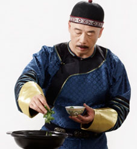
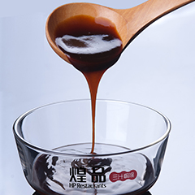
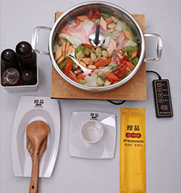
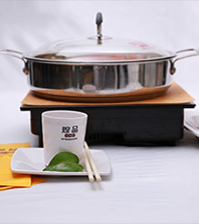

从2011年起，煌品三汁焖锅 作为山东品创餐饮管理有限公司旗下品牌就以其健康养生为美食文化俘虏了一批热爱健康、热爱美食的吃货的心。 作为一个传承养生经典革新养生潮流的中式连锁餐饮品牌，煌品三汁焖锅为了抓住客户的胃， 深度挖掘传统美味精髓，并通过古今合璧的方式，改善无油炸无烹炒无添加的三汁焖锅系列产品。 数十种中草药结合古法工艺的秘制酱汁，融合新鲜食材本身的鲜香，最大限度的锁住营养，留住鲜香。
未来，煌品三汁焖锅将研制更多经典佳肴，为每一个贪吃的小嘴巴带来别致的味蕾体验和欢乐的美味分享。
-

古法焖锅
作为一种古老的民间传统技法，煌品三汁焖锅传承传统，革新工艺。以“完美吃货” 的美食理念，将焖锅与涮、汤的现代美食理念无缝对接，提出时尚吃货新潮流， 用新思潮寻回古法焖锅新味道
-

无水焖制
不添加一滴水，通过独特的古法焖制工艺将蔬菜中本身的水分焖制出来，配合精选 的肉类海鲜类等食材进行细火慢炖，保证食物原本的细嫩鲜香，确保汁浓味厚， 营养丰富，风味独特。
-

“三无”环保
餐桌现场操作，打破了传统中餐的固有既定模式，无厨师，无 油烟，无污染，“三无”环保理念符合“自己动手、丰衣足食”的 统美味思潮和现代化的低碳环保理念。
-

高效快捷
美味不用等，高科技的钛合金专用锅和现代化高效炉具，大程度的集 中火力，一锅美味佳肴只需十一分钟的短时焖制，在肚子咕咕叫之前 呈现营养美味，尽情享受饕餮美味。
-
严格标准
严格把控食材的采购，精选天然健康的蔬菜肉品，标准细化中央厨房精细 加工，选、切、配、焖的统一流程，从服务标准到操作规范严格按照食材 标准，保证品质，天然健康，为您带来卓越的味觉体验。
煌品三汁焖锅底料浓郁鲜香，精选多味中草药， 慢火熬制12小时，加之以牛油，植物色拉油等健康调味底油烹调。
食材与药材之间的完美配比，以传统滋补理论为依据，通过古 法研制与现代饮食相结合，保证焖制的味道健康、美味、让人流连忘返。